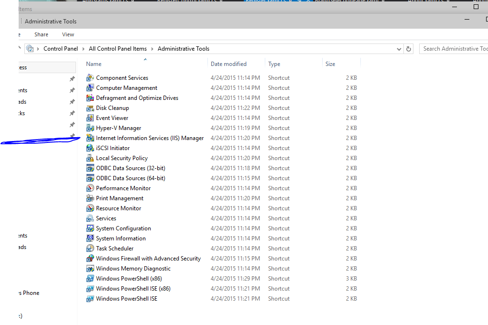
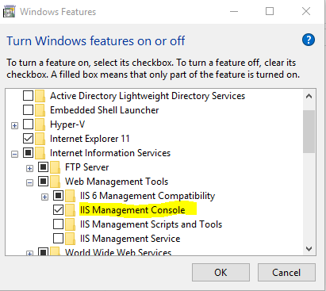
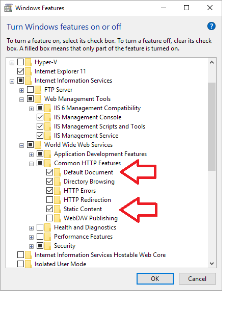

IIS Manager in Windows 10
How do you open IIS (Internet Information Services) Manager using Windows 10?
I have installed the developer preview of Windows 10 and can't seem to find IIS Manager? It is not in Control Panel > Administrative Tools.
When I browse to the
folder C:\Windows\System32\inetsrv
it is empty.
I did a full search of my hard drive to find inetmgr.exe and found three copies and none of them would open, when I tried to open them it says "This App cannot Run on your PC" To find a version of the App that works contact the publisher.
I know IIS works because I have ran local ASP.net apps through VisualStudio, but I can't seem to find any way to launch IIS Manager to do some configurations for a site.
Anyone know anything about this?
Answer
Thanks to @SLaks comment above I was able to turn on IIS and bring the manager back.
Press the Windows Key and type Windows Features, select the first entry Turn Windows Features On or Off.
Make sure the box next to IIS is checked.

If it is not checked, check it. This might take a few minutes, but this will install everything you need to use IIS.
When it is done, IIS should have returned to Control Panel > Administrative Tools

Suggest

Under the windows feature list, make sure to check the IIS Management Console You also need to check additional check boxes as shown below:
